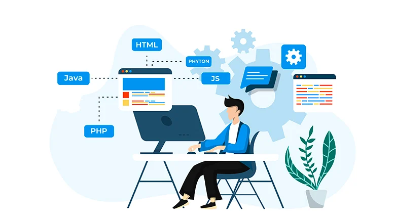
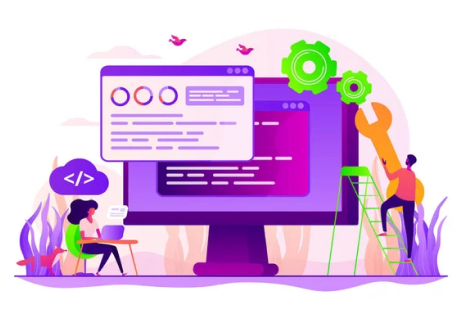

Bättre Webbs
konferens tar plats i Karlstad CCC
9/12 10/12 11/12
10 seminarium som tar dig ifrån början av webbutvecklingen till vart den är idag. Från de första webbplats intrigerna till de nya mordernitererna, vi går igenom allt ifrån UI/ UX - Frontend - Backend - Fullstack på tre dagar. En dröm för den IT intresserade som vill höra historien och vara den första som tar del av utvecklingen.
På fredag kommer Robin Hansen, Kim J Adolfson och Berit Johanesson och föreläser om Webbens historia.
Mer info
Fredag startar eventet
09:00 - 11:00
Robin Hansson - Webbens historia, kriget för en fungerande browser
11:00 - 12:00
Kim J Adolfsson- MDMA/W3C - Regler vi behöver använda oss av och varför
12:00 - 13:00
Lunch - Serveras i kaffeterian för er som förbeställt
13:00 - 15:00
Berit Johanesson - A11y (accessibility) Vad vi behöver tänka på.

Under lördagens seminarium kommer två av grundarna som skapade github, Tom Preston-Werner & Scott Chacon.
Mer info
Lördagens schema
09:00 - 10:00
Lena Kristiansson - Användarvänlighet
10:00 - 12:00
Tom Preston-Werner & Scott Chacon - Grundarna av Github/Git
12:00 - 13:00
Lunch - Serveras i kaffeterian för er som förbeställt
13:00 - 16:00
Bengt Andersson- Javascript

På Söndagen avslutar vi eventet med Eva Josefsson & Magnus Perkele som bryter ned innebörden av backend


Mer info
Söndagens schema
09:00 - 12:00
Eva Josefsson - Backend, programmeringsspårk, vad det används till
12:00 - 13:00
Lunch - Serveras i kaffeterian för er som förbeställt
13:00 - 16:00
Magnus Perkele - Fullstack varför vi behövs